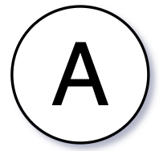
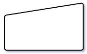
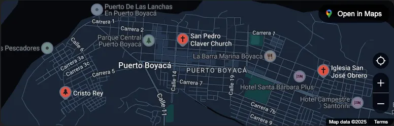
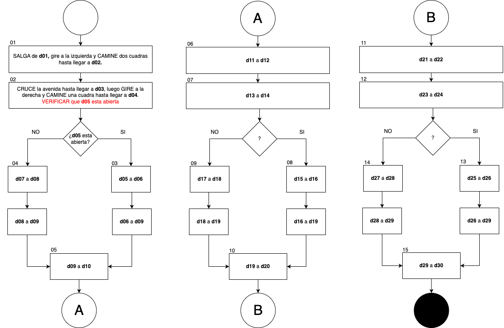

Guía 1022: Algoritmos¶
|
|

Exploración Estructuración Actividad práctica Transferencia
Temática: Desarrollo de algoritmos.
Objetivo de aprendizaje: Desarrollar la capacidad de abstracción y lógica algorítmica mediante la representación gráfica de procesos, permitiéndole modelar soluciones secuenciales y ordenadas a problemas de la vida cotidiana.
Componente: Solución de problemas con T&I.
Competencia: Propongo innovaciones tecnológicas e informáticas para la solución de problemas dando cumplimiento a restricciones, condiciones y especificaciones técnicas y contextuales.
Evidencia de aprendizaje: Propongo, analizo y comparo diferentes soluciones a un mismo problema de la tecnología o la informática, explicando su origen, ventajas y dificultades.
Actividades desarrolladas en su totalidad.
Participación en clase.
Explicación clara de conceptos.
Argumentación de ideas.
Cumplimiento de las reglas del aula.
La presente guía no contiene recursos.
Mensaje del autor¶
“Entender cómo funciona el mundo actual requiere aprender a pensar de forma organizada. Esta guía invita a usar el desarrollo de algoritmos como una herramienta para abstraer y modelar soluciones. Al visualizar sus ideas, usted podrá comparar distintas rutas lógicas para un mismo problema, evaluando sus beneficios y desafíos”.
—Camilo Fonseca
ALGORITMO¶
[2] Un algoritmo es un conjunto de instrucciones que le dicen a un ser humano COMO REALIZAR una tarea específica, dichas instrucciones pueden estar escritas en código o lenguaje natural.
Un algoritmo puede ser expresado con palabras o números.
Tipos de algoritmos¶
Un algoritmo es cualquier actividad o evento con inicio y final, que tenga una serie de pasos lógicos para lograr su ejecución. Y estos suelen ser representados mediante diagramas de flujo.
Existen dos tipos de algoritmos:
Algoritmos cualitativos (informales)
Algoritmos cuantitativos (formales)
Algoritmos cualitativos (informales)¶
No requieren de cálculos numéricos para su ejecución. En su lugar, se deben ejecutar secuencias lógicas. Por ejemplo: las instrucciones para ensamblar un artefacto.
Algoritmos cuantitativos (formales)¶
Requieren de cálculos numéricos (por ejemplo la solución de una ecuación). Si el cálculo numérico puede ser procesado por una persona, entonces es un algoritmo cuantitativo no computacional.
Si los cálculos numéricos son muy complejos entonces requieren poder computacional. A esta clase de algoritmos se les dice que son algoritmos cuantitativos computacionales.
Algoritmo cuantitativo no computacional: Estos algoritmos requieren de operaciones numéricas simples, que un ser humano puede resolver sin necesidad de usar un sistema computacional. Por ejemplo una receta de cocina, un cálculo numérico sencillo o las instrucciones para llegar a un lugar.
Algoritmo cuantitativo computacional: Estos algoritmos requieren de operaciones numéricas complejas que deben resolverse con dispositivos de cálculo, como una computadora o calculadora. Ecuaciones de mucha complejidad o códigos que solo pueden ser interpretados por una máquina, son ejemplos de este tipo de algoritmo.
Diagrama de flujo¶
[1] Un diagrama de flujo es un esquema gráfico donde se muestra el paso a paso para cumplir un objetivo.
Los diagramas de flujo usados en informática, son útiles porque ayudan a los programadores a organizar y visualizar el código haciendo más fácil encontrar y corregir errores.
Símbolos de diagramas de flujo¶
A continuación se explican los símbolos que componen los diagramas de flujo del estándar (ANSI/ISO):
Operación

Acción o Instrucción¶ |
Se usa para describir cualquier acción o instrucción. En el interior se escribe una descripción de alguna acción o instrucción a ejecutar.
¿Qué es una instrucción?
Una instrucción es una orden o indicación que se da para realizar una acción específica. Puede estar presente en distintos ámbitos. Por ejemplo:
Una instrucción de educación: Indicaciones que un profesor da a los estudiantes sobre cómo realizar una tarea o actividad.
Instrucciones de programación: Son comandos que le indican a una computadora qué hacer. Las instrucciones son parte del código fuente de un programa.
Instrucciones de cocina: Son pasos a seguir para una receta.
Instrucciones técnicas: Guías que explican cómo usar o ensamblar un producto. También aplica en el software.
Reglas para dar buenas instrucciones
CLARIDAD: Ayudan a entender qué se espera hacer.
EFICIENCIA: Permiten realizar tareas de manera correcta y rápida.
SEGURIDAD: En ciertos contextos, como el uso de maquinaria, las instrucciones son vitales para evitar accidentes.
Límites de proceso

Inicio - Fin¶ |
Indica el inicio (círculo blanco) y final (círculo negro) del algoritmo.
Punto de decisión

Condicional¶ |
Denota que en este punto se toma una decisión. Las únicas posibles opciones son SI/NO.
Conector
 Conexión¶ |
{kind=link}
Señala que la salida de un proceso/algoritmo, puede ser la entrada de otro proceso.
{kind=link}
Entrada manual
 Entrada¶ |
{kind=link}
Permite una entrada manual del usuario para ser procesada en el algoritmo.
{kind=link}
Base de datos

Base de datos¶ |
Conjunto de tablas donde se retiene la información. En espera que se cumplan otras condiciones para continuar con el proceso/algoritmo.
Metodología para desarrollar un algoritmo¶
Cuando se desarrolla un algoritmo, cualquier usuario podría ejecutarlo siempre y cuando cumpla unos requisitos iniciales.
Para desarrollar un algoritmo, se tienen las siguientes fases:
FASE 01: Análisis de requisitos (objetivo y condiciones)
En esta fase se identifica lo siguiente:
Objetivo: Identificar el objetivo claro del algoritmo.
Condiciones iniciales: Identificar los requisitos que debe cumplir el usuario para poder desarrollar el algoritmo.
Condiciones de incumplimiento: Identificar todos los condicionales del algoritmo.
Condiciones de cumplimiento: Identificar el estado del usuario cuando se cumple el algoritmo.
FASE 02: Diseño del algoritmo (diagrama de flujo)
Realizar un diagrama de flujo donde muestre el paso a paso lógico por medio de las siguientes figuras:
Círculos: INICIO y FIN
Rectángulos: Acciones
Rombos: Condicionales
Rombos anidados: Bucles
Flechas: Orden de secuencia.
Después de tener el diagrama de flujo, realizar un análisis.
FASE 03: Construcción del algoritmo (código fuente)
Conversión del diagrama de flujo a CÓDIGO FUENTE. El código fuente es cualquier código que usa un lenguaje de programación que entienda una PC. En este caso sería PYTHON pero de momento se usará PSEUDOCÓDIGO. Se debe identificar el algoritmo. La identificación debe tener:
TÍTULO: “Nombre del algoritmo”
AUTOR: “Creador del algoritmo”
FECHA: “Fecha de creación o última modificación del algoritmo”
EJEMPLO: Algoritmo para ir al colegio¶
Desarrolle el siguiente ejercicio:
EJERCICIO: Algoritmo para ir al colegio
En su cuaderno desarrolle un algoritmo que permita a un estudiante ir al colegio. Tenga en cuenta lo siguiente:
El estudiante inicialmente está en su casa. Luego debe ponerse el uniforme e ir al garaje para intentar prender la moto.
Si la moto NO prende, entonces salir del garaje, luego salir de la casa para llegar al colegio a pie.
Si la moto SI prende, entonces abrir el garaje, luego salir del garaje para llegar al colegio en moto.
A continuación se muestra la solución del desarrollo del algoritmo.
FASE 01: Análisis de requisitos¶
(Objetivo y condiciones)
OBJETIVO:
Llegar al colegio.
CONDICIONES INICIALES:
El estudiante debe estar en su casa
La casa del estudiante debe tener un garaje.
El estudiante no debe tener puesto el uniforme.
El estudiante debe tener una moto en el garaje.
CONDICIONES DE INCUMPLIMIENTO:
La moto no prende.
CONDICIONES DE CUMPLIMIENTO:
El estudiante está en el colegio.
El estudiante tiene el uniforme puesto.
La moto puede estar en el colegio o en el garaje.
FASE 02: Diseño del algoritmo¶
{kind=link}
FASE 03: Construcción del algoritmo¶
(Código fuente)
TÍTULO |
Algoritmo para que un estudiante pueda ir al colegio |
AUTOR |
Camilo Fonseca |
FECHA |
Domingo, 12 de Abril de 2026 - 03:38pm |
1 INICIO
2
3 1. Ponerse el uniforme
4 3. Ir al garaje
5 4. Intentar prender la moto
6 5. Si (la moto SI prende)
7 5.1 Abrir el garaje
8 5.2 Sacar la moto
9 5.3 Cerrar el garaje
10 5.4 Conducir hasta el colegio
11 6. Si (la moto NO prende)
12 6.1 Salir del garage
13 6.2 Salir de la casa
14 6.3 Cerrar la puerta
15 6.4 Caminar hasta el colegio
16 7. Llegar al colegio
17
18 FIN
A00: Introducción (5%)¶
Exploración
TRANSCRIBA en su cuaderno el objetivo, las orientaciones curriculares y los criterios de evaluación de la presente guía.
LEA el mensaje del autor y en su cuaderno con sus palabras responda:
¿Qué es abstracción?
¿Qué es modelar una solución?
A01: Taller (10%)¶
Estructuración
Escriba las siguientes frases en su cuaderno e indique si es falso o verdadero e indique el por qué.
Un algoritmo está compuesto por elementos informáticos que componen una secuencia organizacional únicamente. ___ (¿por qué?)
Un algoritmo son un conjunto de instrucciones que le dicen a una computadora o un ser humano como realizar una tarea específica, dichas instrucciones pueden estar escritas en código o lenguaje natural. ___ (¿por qué?)
Un algoritmo se define como cuadros de funcionamiento infinitos que permiten y tienen como propósito reducir la información. ___ (¿por qué?)
En su cuaderno relacione con líneas los siguientes cuadros según corresponda su significado:
Cuadro comparativo (Tipos de algoritmos)¶
Escriba la siguiente tabla en su cuaderno y clasifique los algoritmos según corresponda:
EJEMPLO
Clasificación
¿Por qué?
Instrucciones para llegar a un lugar
Instrucciones con medición de tiempo para llegar a un lugar
A=10,B=12
C=A+BMicrosoft Word
LINUX
print("Digite su nombre")PASO 01: Abra la bandeja de entrada
PASO 02: Inserte hojas tamaño carta
PASO 03: Cierre la bandeja de entradaBIOS
CANVA
LibreOffice Writer
Control de vuelo con API de GOOGLE
Sensor Temperatura con ARDUINO
Instrucciones corte cabello
En su cuaderno describa las 3 fases para desarrollar un algoritmo.
Responda la siguiente pregunta en su cuaderno:
¿Que diferencia hay entre desarrollar un algoritmo, diseñar un algoritmo y construir un algoritmo?
Consulte en INTERNET que hace un arquitecto de software y luego en su cuaderno responda:
¿Cual es la diferencia entre un arquitecto de software y un programador?
En su cuaderno responda las siguientes preguntas:
¿Qué es una instrucción?
¿Por que la claridad, la eficiencia y la seguridad son importantes al momento de dar instrucciones?
En su cuaderno escriba una serie de instrucciones (seguras, claras y eficientes) para que un estudiante vaya al colegio desde que se despierta hasta que llega al aula de clase.
En su cuaderno describa cada una de las figuras de un diagrama de flujo y dibuje sus símbolos.
{kind=link}
A02: Orientaciones al extranjero (25%)¶
Actividad práctica
Lea el siguiente caso:
“Suponga que un extranjero visita Puerto Boyacá y quiere hacer turismo en el pueblo. El extranjero se encuentra en las afueras del hospital JOSE CAYETANO VASQUEZ y quiere conocer cada una de las iglesias católicas en Puerto Boyacá.”
Iglesia San José Obrero (Barrio la Paz).
Iglesia San Pedro Claver (Centro).
Iglesia Cristo Rey (Cra 4a, Calle 5).

Mapa Puerto Boyacá¶
En su cuaderno, cree un diagrama de flujo con 15 instrucciones que le permitan al extranjero llegar a cada una de las iglesias. Tenga en cuenta lo siguiente:
5 instrucciones por iglesia (15 instrucciones).
2 direcciones por instrucción (30 direcciones).
Cree un inventario de las 30 direcciones por medio de variables así:
d01 = "Hospital José Cayetano Vasquez, (Cra 5 con calle 29)" d02 = "UPTC, (Cra 5 # 25 - 2)" d10 = "Iglesia San José Obrero, (Calle 28 # 3A - 54)" d20 = "Iglesia San Pedro Claver, (Calle 14 # 3 - 21)" d30 = "Iglesia Cristo Rey, (Cra 4a con calle 5)"
Cada instrucción(operación) debe describir como ir de una dirección A a una dirección B. Por ejemplo:
Diagrama de flujo: Orientaciones al extranjero¶
Usar una página de cuaderno por cada diagrama.
Para identificar las direcciones, se recomienda usar Google Maps.
No olvide que el extranjero prefiere caminar (no moto, no cicla, no vehículo).
Antes de orientar al extranjero para ir a una nueva dirección, siempre verificar la ubicación actual para evitar que el extranjero se tele-transporte por error.
En su cuaderno, adapte el algoritmo de la actividad anterior, de tal forma que contenga 3 condicionales.
Los condicionales permitirán al extranjero tomar caminos alternos en caso de la ocurrencia de algún evento inesperado (vías cerradas, semáforos en rojo, perros bravos, negocios cerrados, etc.).
Por ejemplo:

Diagrama de flujo: Instrucciones seguras¶
Usar una página de cuaderno por cada diagrama.
{kind=link}
{kind=link}
{kind=link}
A03: Algoritmos (60%)¶
Transferencia
En su cuaderno desarrolle cada uno de los siguientes ejercicios, siguiendo la metodología para desarrollar un algoritmo.
Adquirir un revista física de arte
Desarrolle un algoritmo para que una persona adquiera una revista física de arte. Tenga en cuenta lo siguiente:
La persona inicialmente busca en INTERNET una revista física de arte.
Una vez encontrada la revista, revisar cuanto cuesta y ver si tiene el dinero suficiente para comprarla. Si no tiene el dinero suficiente volver a buscar la revista en INTERNET cuantas veces sea necesario. Si tiene el dinero suficiente alistar el dinero.
Luego la persona debe revisar en GOOGLE MAPS para localizar la dirección de la librería. Activar la función de GOOGLE MAPS y dirigirse caminando hacia la librería. Intentar entrar a la librería. Si la librería no está abierta: volver a buscar la revista en INTERNET e iniciar de nuevo. Si la librería está abierta, entrar a la librería.
Revisar si la revista está en STOCK. Si la revista no está en STOCK, volver a buscar la revista en INTERNET y empezar de nuevo. SI la revista si está en STOCK, comprar la revista física de arte.
Entrar a una casa con llave
Desarrolle un algoritmo para que una persona entre a una casa cuya cerradura está asegurada con llave. Tenga en cuenta lo siguiente:
La persona inicialmente buscará la llave en su bolsillo. La persona intentará abrir la cerradura con la llave de su bolsillo.
Si la cerradura no abre ahora buscará otra llave en un tapete exterior y volverá a intentar abrir la cerradura con dicha llave.
Si la cerradura no abre ahora buscará otra llave en la guantera de un carro y volverá a intentar abrir la cerradura con dicha llave.
Si la cerradura no abre, llamará a un cerrajero para que abra la puerta. Si el cerrajero no contesta, entonces seguir intentando hasta que conteste.
Si la cerradura si abre, intentar abrir la puerta. Si la puerta abre entrar a la casa y confirmar que se logró entrar. Si la cerradura no abre, confirmar que no se logró entrar.
Saludar y despedirse de una persona
Desarrolle un algoritmo para que el usuario salude y se despida de una persona. Tenga en cuenta lo siguiente:
La persona debe verificar inicialmente si ya saludo a la otra persona
Si la persona no ha saludado, saludar a la persona. Esperar a que la persona salude. Si la persona no saluda, seguir intentándolo hasta que salude.
Una vez que la persona salude, preguntar como esta. Si la persona responde NO esta bien, preguntar que le pasa, escuchar a la persona y decirle que el tiempo lo arregla todo. Volver a preguntar si la persona esta bien (cuantas veces sea necesario) hasta que la persona responda que esta bien. Si la persona responder que SI esta bien entonces manifestar tranquilidad.
Volver a verificar si la persona ya saludo.
Si la persona ya saludo, entonces determinar un tiempo para poder irse.
El usuario debe establecer el tiempo para irse.
Verificar que el tiempo se cumplió. Mientras el tiempo no se cumpla, entonces hablar con la persona de cualquier tema mientras se cumple el tiempo. Ir disminuyendo el tiempo.
Una vez el tiempo esté cumplido, despedirse. Esperar a que la persona responda la despedida. Si la persona no contesta seguir despidiéndose hasta que la persona conteste.
Una vez se despida de la persona generar una mensaje de IRSE.
Calmar a una persona
Desarrolle un algoritmo para calmar una persona. Tenga en cuenta lo siguiente:
Identificar el estado de la persona.
Si la persona esta bien, entonces irse del lugar. Si la persona esta en mal estado realizar lo siguiente:
Identificar la edad de la persona.
Si la persona es un bebe entonces intentar calmarla con un tetero. Si la persona es un niño entonces calmarla dándole un dulce. Si la persona es un adolescente entonces intentar calmarla dándole una gaseosa. Si la persona es un adulto entonces intentar calmarla dándole una cerveza. Si la persona es un anciano entonces intentar calmarla dándole un café.
Luego volver a identificar el estado de la persona y si todavía no se ha calmado, seguir intentando hasta que se calme.